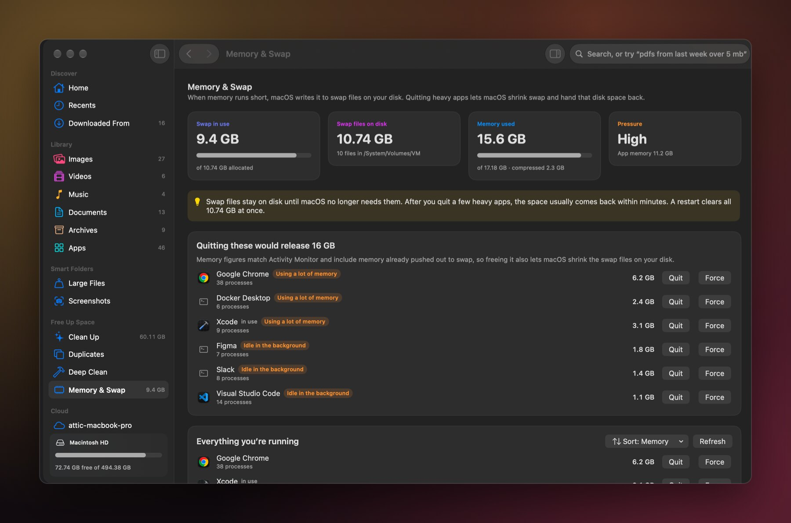
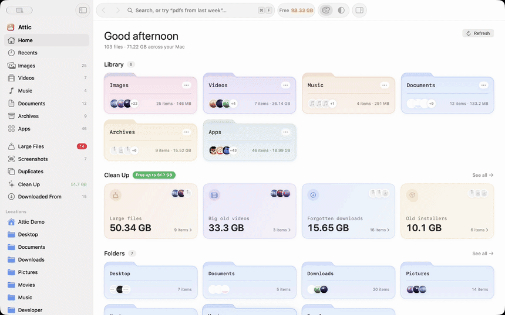
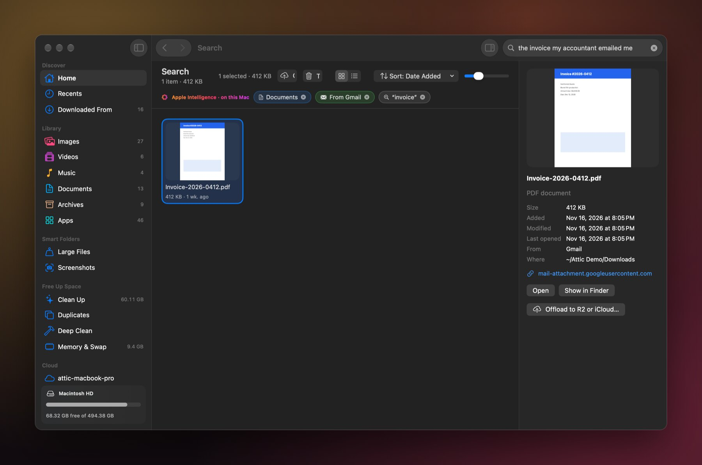

Free up your Mac.
Keep everything.
Attic shows you what's filling your disk, clears what you don't need, and moves big files to Cloudflare R2 or iCloud Drive with a placeholder you double-click to bring back.
Attic shows you what's filling your disk, clears what you don't need, and moves big files to Cloudflare R2 or iCloud Drive with a placeholder you double-click to bring back.
Type “pdfs from last week over 5 mb” or “screenshots with wifi password”. Attic shows how it read your search as chips you can remove, and it reads the words inside your screenshots too.

node_modules, Xcode builds, Python envs and package caches that rebuild themselvesEverything goes to the Trash. You review first.

When memory runs short, macOS writes it to swap files on your disk, and those can take 10 GB or more. See how much swap is in use and which apps are holding memory, then quit them in one click.

Press ⇧⌘Space anywhere for a small search panel that understands the same plain English. The menu bar icon lists your latest downloads, ready to drag into Mail or Slack.

Attic uses the intelligence that already ships with macOS:
No prompts, files or text are sent anywhere. There's no Attic server at all.

Pick files and choose where they go. Attic removes the copy on your Mac only after the cloud copy checks out.

| Cloudflare R2 | iCloud Drive | |
|---|---|---|
| Where it goes | A private bucket of your own (created for you) | iCloud Drive ▸ Attic |
| What stays on your Mac | A tiny name.ext.attic placeholder | A link in the original folder |
| Getting it back | Double-click the placeholder | Just open it |
| Safety check | MD5 on every part, then a size check in R2 | Waits for iCloud to confirm the upload |
| Cost | About $0.015 per GB a month, no download fees | Your iCloud plan |
Read every line, build it yourself, or grab the notarized download. No account, no tracking, no server.
About 7,000 lines of Swift, no third-party dependencies. The R2 client signs its own requests.
Attic --selftest checks search, scanning, memory, R2 round trips and iCloud offload/restore.
Every screenshot, GIF and the launch video come from a made-up demo library, built by scripts in the repo.
brew install xcodegen git clone https://github.com/piyushgit011/attic-mac && cd attic-mac xcodegen generate xcodebuild -project Attic.xcodeproj -scheme Attic -configuration Release \ -derivedDataPath build/dd CODE_SIGN_IDENTITY=- DEVELOPMENT_TEAM= build open build/dd/Build/Products/Release/Attic.app
Only files you choose to offload, and only to your own R2 bucket or your iCloud Drive. Scanning, search, text recognition and the AI all run on your Mac.
Clean Up, Duplicates and Deep Clean move items to the Trash, so you can always put them back. Offloading removes a local copy only after the cloud copy checks out.
A Mac with Apple Intelligence turned on (macOS 26 or later). Without it, search still works using Attic's own rules.
macOS protects those folders. Attic needs to see them to show your files and work out what's using space.
Yes. MIT licensed, no subscription, no account. If R2 is your offload target, Cloudflare bills you directly for storage (about $0.015 per GB a month).